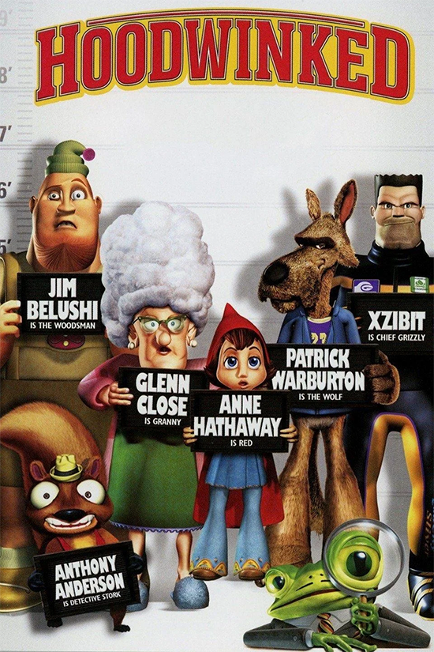

About

Grizzly (Xzibit) and Stork (Anthony Anderson) are critter cops who are investigating a disturbance of the peace at between Granny (Glenn Close), her granddaughter Little Red Riding Hood (Anne Hathaway), a Big Bad Wolf (Patrick Warburton) and a Woodsman (James Belushi). As the duo interviews the parties involved they suspect Granny is not as helpless as she lets on, Red has hidden motives, Wolf is not much of a predator and the Woodsman might be as dense as the tress he cuts down.